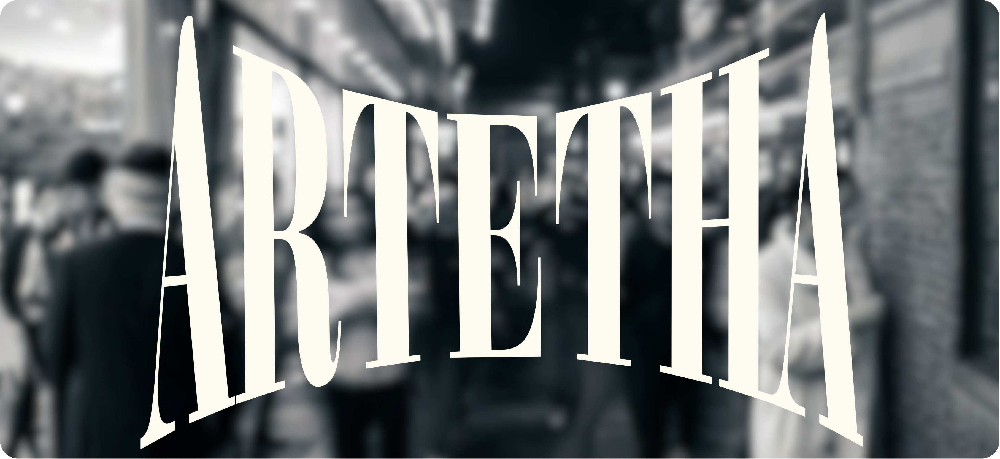

Identitas & Disiplin Logika
Mahasiswa Informatika UPN "Veteran" Yogyakarta dengan minat dan pemahaman mendalam di bidang pemrograman C/C++, perancangan basis data relasional SQL, serta administrasi sistem Linux. Terbiasa membangun aplikasi terstruktur berbasis logika algoritma, merancang skema database (ERD/RAT), dan mengelola keamanan hak akses pengguna pada MySQL/MariaDB. Bekerja efisien di lingkungan pengembangan berbasis terminal dengan komitmen estetika mandiri.


Eksplorasi Sudut Kota & Gradasi Monokrom
Menyusun rekaman visual analog dalam ritme bata horizontal yang melintasi tepi layar. Setiap foto menyimpan partikel perak halida dan waktu yang terhenti.
01A
02A
03A
04A
 09A
05A
06A
07A
08A
09A
05A
06A
07A
08A
 10A
10A
 11A
11A
 12A
01A
02A
03A
12A
01A
02A
03A
Arsitektur Workspace & Dotfiles Wayland
Orbit Topografi & Elevasi Lereng Merapi
KM 04
KM 08
KM 14
KM 19
KM 24
KM 28
KM 32
KM 36
KM 39
KM 42
Ekspedisi jalan menanjak aspal pedesaan lereng selatan Merapi. Melewati udara sejuk pagi hari, kabut tipis di tikungan pinus, dan turunan teknis berliku menuju lembah sungai.
Antologi Kata & Suara Hujan
Hujan di Jendela Kost
Di balik kaca yang berembun,
aku menghitung tetes yang jatuh.
Satu, dua, tiga, lalu hilang
seperti janji yang tak pernah sampai.
Biar hujan bicara malam ini.
Aku hanya pendengar yang lelah
menyimpan cerita di balik bantal.